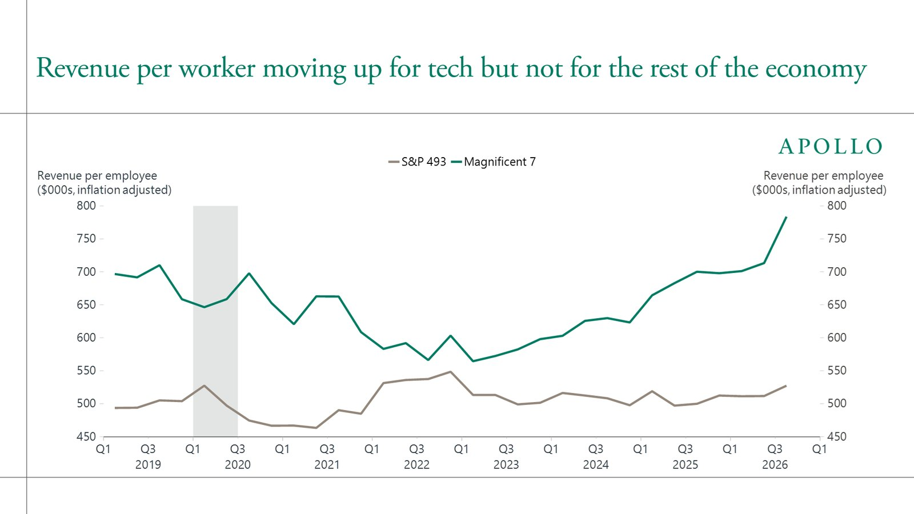

头条 一
LiteLLM 官方公布 1.107.0 事件经过：5 月 27 日，一份配置文件把内部智能体平台的主密钥误提交到公开仓库，密钥未吊销；10 月 10 日攻击者用它取出组织所有者的 GitHub 令牌，10 月 21 日改发布流程，带后门的版本上线约两小时。
公司称发布审批本周早些时候放宽为任意两名工程师即可，攻击者借此用两枚被盗令牌完成触发与批准。据 StepSecurity，这是 LiteLLM 今年第二次在 PyPI 被投毒。
来源：LiteLLM 官方博客
头条 二
中国信通院发布《大模型词元服务性能监测报告（2026 年）》：6 月国内词元日均消耗约 500 万亿，是 2025 年 12 月的近 4 倍。经历两年价格战后，国内归一化均价从去年下半年的 6.8 元升到今年的 13.46 元，涨幅接近一倍。
8 月国内平均输出速度 78.23 词元/秒，比 2025 年翻倍，仍低于国外的 112.82。用量越大，降价补贴的时期越像已经过去。
来源：IT 之家（转述信通院报告）
头条 三

图片来源：Apollo Daily SparkApollo 首席经济学家 Torsten Slok 称，AI 对科技业以外的美国企业“零财务回报”：Mag 7 的人均收入和利润率在升，标普其余 493 家持平，生产率增速也未见提升。他说主流企业开始把词元支出当成压低利润率的成本。
这是一位经济学家的判断，图表数据来自彭博、Ramp 等，并非普查。与上一条并读：用得更多，但还没人证明挣得更多。
来源：Apollo Daily Spark
密钥泄露五个月，攻击十天后才变成发布权限：慢性问题最后总是急性发作。
价格涨了、用量翻了，缺的是一个能把词元换成利润的证据。
信通院的数是供给侧，Apollo 的判断是需求侧，两者现在对不上。